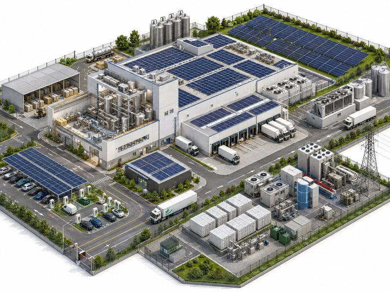

Industrial and commercial buildings are usually the strongest case for solar in the UK: large roofs, demand that peaks during the working day, and unit prices that make every kWh used on site worth having. A site that uses most of its solar typically shows payback in around four to seven years in the calculator.

Why solar suits industrial and commercial sites
- Big, unshaded roofs. A 10,000 m² factory or warehouse roof can take a system of around 1.5 MWp.
- Daytime demand. Production lines, refrigeration, lighting and offices use most of their power when the sun is up, so more of the solar is used on site.
- Carbon reporting. On-site generation cuts Scope 2 emissions directly, which helps with SECR reporting, customer supply chain requirements and net zero plans.
- No business rates on the system in England until March 2035.
Manufacturing
Manufacturers usually have the best match between when solar generates and when power is used, especially on sites running day shifts five or more days a week. Typical systems range from 200 kWp to 2 MWp, and sites often use 65 to 85% of what they generate.
Look at your process loads: compressed air, chillers and motors that run through the day all soak up solar. Adding a battery can also trim the peaks in your half-hourly demand, which cuts capacity-related charges on some tariffs.
Logistics and warehousing
Warehouses have the largest roofs of any commercial building, so they can host big systems, typically 500 kWp to 5 MWp. The challenge is demand: a lightly used warehouse may only use 40 to 70% of its solar, and exported electricity earns much less than electricity used on site.
Three ways to improve the numbers: size the system to your daytime demand rather than filling the roof, add EV charging for vans and HGVs to use the midday surplus, or use a PPA where the funder takes the export income.
Retail and leisure
Shops, supermarkets and leisure centres trade through the day, which lines up well with solar output. Typical systems are 100 kWp to 1 MWp, with 60 to 80% used on site. Solar carports over customer car parks add generation, shelter and EV charging, and in England they can be built under permitted development with prior approval.
If you rent your unit, involve the landlord early. Many landlords now welcome solar because it improves the building's energy rating.
Typical figures by type of site
| Type of site | Typical system | Solar used on site |
|---|---|---|
| Manufacturing | 200 kWp to 2 MWp | 65 to 85% |
| Logistics and warehousing | 500 kWp to 5 MWp | 40 to 70% |
| Retail and leisure | 100 kWp to 1 MWp | 60 to 80% |
Use these ranges as a starting point for the "solar used on site" input in the calculator.
Getting started
- Run the calculator with your postcode, roof outline and unit price.
- Pull 12 months of half-hourly meter data. It shows how much solar you would really use.
- Check your roof's condition and remaining life, and your lease if you rent.
- Compare buying outright with a PPA. See our funding guide.
- Start the DNO application early. See planning and grid connection.
Common questions
How much solar can a warehouse roof take?
Roughly 1.5 MWp for every 10,000 m² of usable roof, depending on layout, rooflights and plant. A 20,000 m² distribution centre can often take 2 to 3 MWp.
Is it worth putting solar on a warehouse with low demand?
It can be, but size it carefully. Solar you use on site is worth your full unit price, while exported solar earns far less. Sizing to your daytime demand, adding EV charging, or using a PPA can all improve the return.
Can I install solar on a building I rent?
Yes, with the landlord's consent. Make sure your lease runs longer than the payback period, or the PPA term, and agree who owns the system at the end.